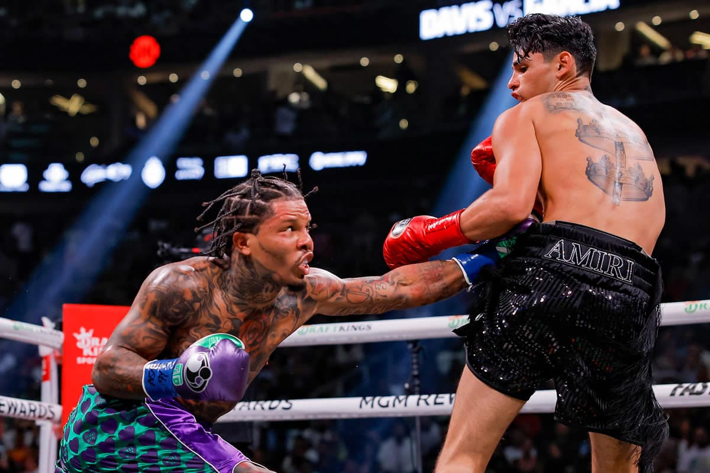

La pelea que coronó al "Chino" Maidana y derrocó a Adrien Broner.
Franco Arias Coronel 25/11/23

El argentino tuvo una gran actuación, se llevó el combate en decisión unánime y se quedó con la corona welter, versión AMB. En lo que fue una de las peleas del año, tiró dos veces al estadounidense. Tal fue el dominio del Chino, que Adrien Broner "besó" dos veces la lona: en el segundo y en el octavo round, y lo tuvo al borde del nocaut en el primero y en el noveno, para llevarse la decisión en las tarjetas por 115-110, 116-109 y 117-109.
Seguir leyendo la noticia completa.'Tank' acabó al 'King' en el séptimo asalto con un potente gancho al hígado en la T-Mobile Arena de Las Vegas.
Franco Arias Coronel 25/11/23
García tomó la iniciativa al inicio del combate, pero el poder de Davis marcó el rumbo a partir del segundo asalto cuando envió a la lona al 'King' con un potente impacto al rostro. Después de que García intentó emparejar el combate, Davis conectó un gancho al hígado que puso fin a la pelea.
Seguir leyendo la noticia completa.